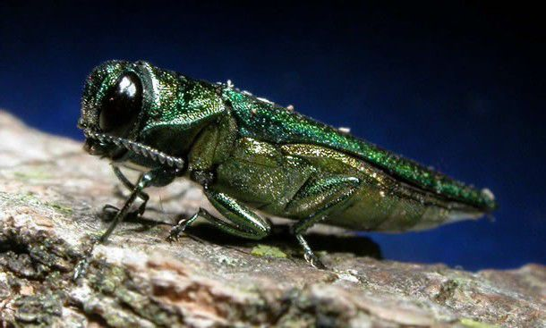

15 Facts About Emerald Ash Bores
- The Emerald Ash Borer, Agrilus planipennis, is a wood-boring beetle native to China, Japan, Russia, and Korea.
- The adult beetle is dark metallic green and bullet shaped. It is a little less than half an inch long and narrow.
- Adult Emerald Ash Borers feed on ash tree leaves.
- There are a number of insects that might be mistaken for EAB. These include: Honeysuckle Flatheaded Borers, Six-Spotted Tiger Beetles, Green Ground Beetles, Click Beetles, and others.
- The most extensive damage to ash trees is actually done at the larval stage. The EAB larvae feed on the tissue in the tree that transfer nutrients and water between the roots and leaves.
- The larvae are often not killed by insecticides because they live under the bark of the trees.
- It is believed that the EAB arrived in the United States in the solid wood packing material used to import international goods. The EAB also spreads with firewood movement.
- Since 2002, infestations of EAB have reached 23 states and two Canadian provinces. Ranging from as far north as Canada and as far south as Georgia, the scope of EAB is startling. While no EAB infestations have been found in Maine yet, Massachusetts, New Hampshire, and Quebec all have this invasive species.
- All three species of ash found in Maine (White Ash, Green Ash, and Brown or Black Ash) are susceptible to Emerald Ash Borer invasions.
- The warning signs of an EAB infestation in Ash trees include: thinning of the upper canopy of the tree, increased woodpecker activity, early summer/fall leaf loss, and “D-shaped” holes in the bark of the tree.
- Approximately 150-200 million ash trees have died in the United States due to Emerald Ash Borer infestation.
- Viable EAB eggs and larvae can remain inside firewood for more than a year.
- In 2010, Maine Forest Services banned all out-of-state firewood to prevent the EAB and another wood-boring insect, the Asian long-horned beetle, from entering into Maine’s forest ecosystems.
- Teams of scientists and volunteers have found a way to monitor whether or not the EAB has entered Maine’s state lines by using wasps. Wasps that prey on shiny wood-boring beetles are used as a bio-surveillance tool. When a wasp returns to its nest with a beetle, a volunteer captures the prey and determines whether or not it is an Emerald Ash Borer. So far, no EAB beetles have been found.
- It is extremely important to report any potential EAB sighting to the Maine Forest Service immediately.